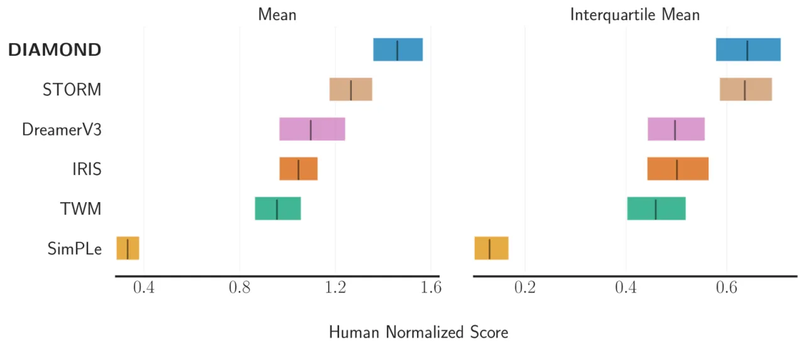
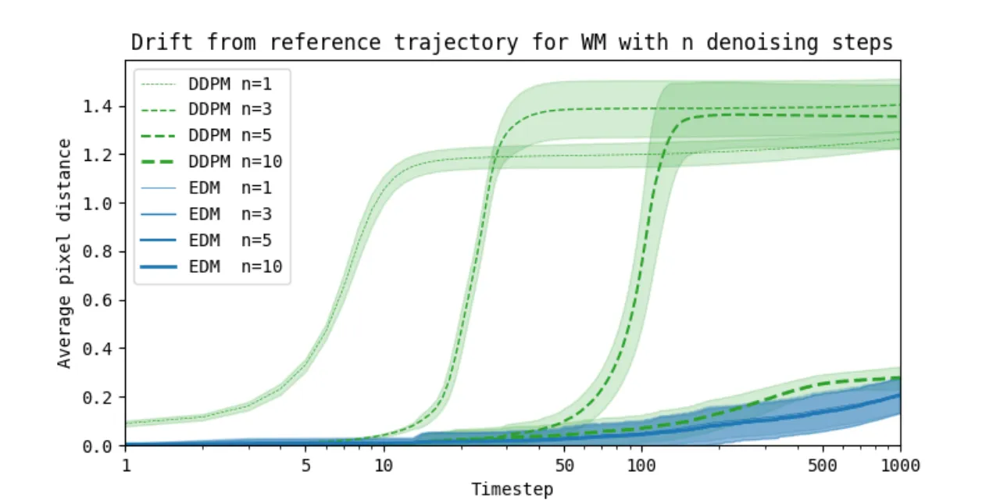
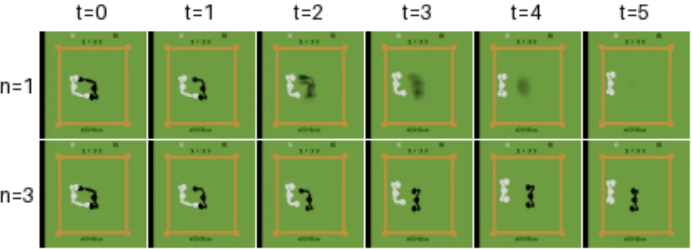
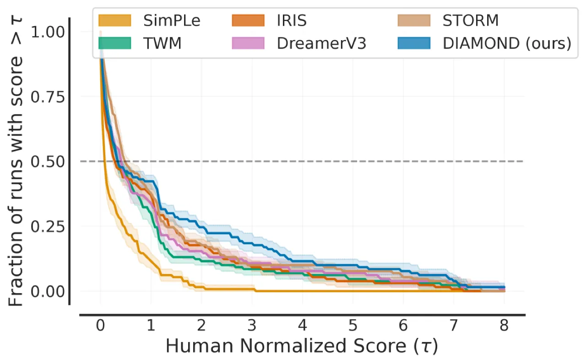
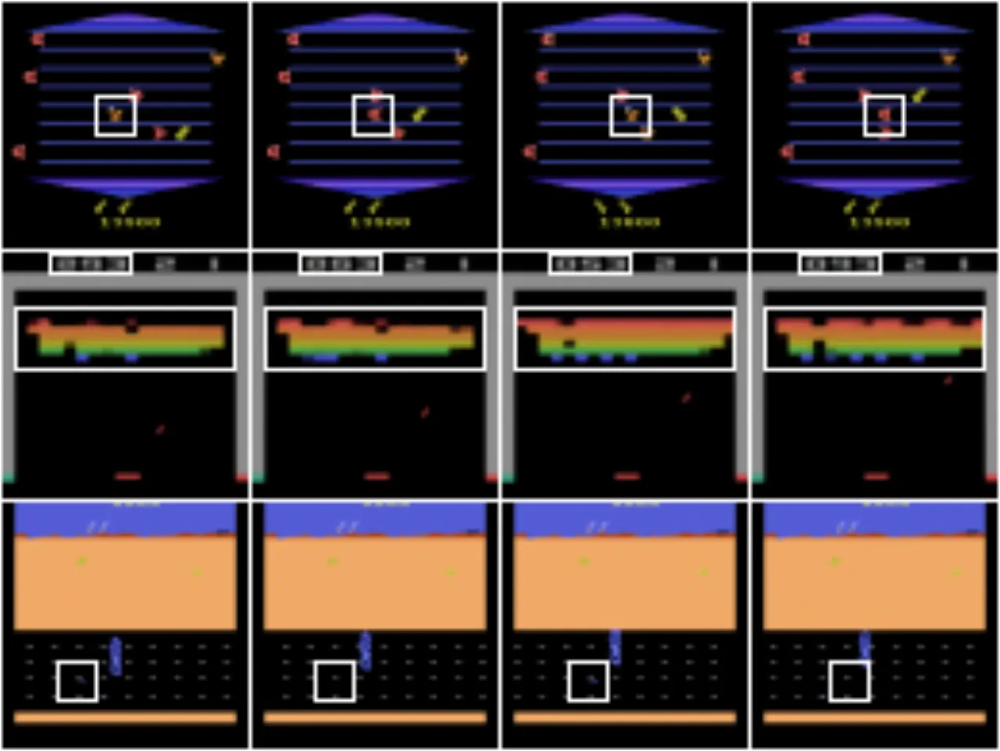
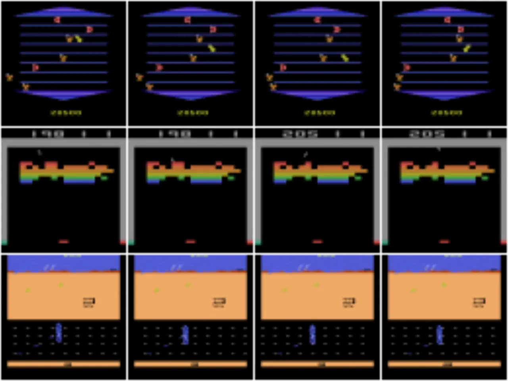
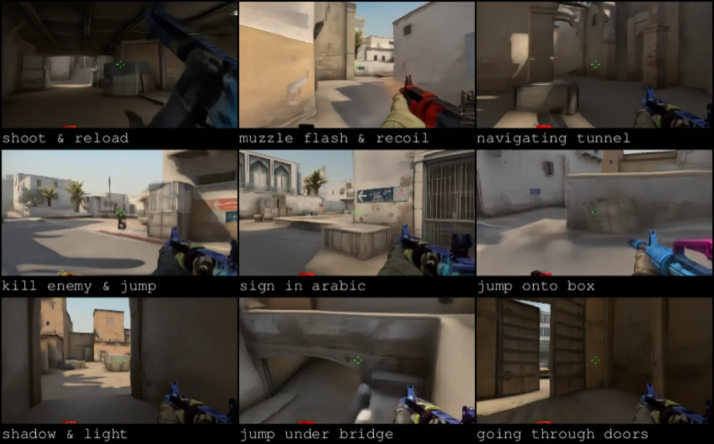

DIAMOND（DIffusion As a Model Of eNvironment Dreams）是首个在扩散世界模型中训练的强化学习智能体。与离散隐变量压缩方案不同，DIAMOND 在像素连续空间中直接建模环境动态，保留了对策略决策至关重要的视觉细节，在 Atari 100k 基准上取得了 1.46 的平均人类归一化分数，创下世界模型内训练智能体的最优记录。
现有世界模型普遍依赖离散隐变量进行压缩，这种有损压缩会丢弃对策略决策至关重要的视觉信息。作者认为，小的视觉细节——例如远处的行人或交通灯——可能直接改变智能体的行为，而离散编码无法忠实还原这些细节。
"Discrete latent representations involve lossy compression that may discard visual information crucial for learning. Small details in the visual input, such as a traffic light or a pedestrian in the distance, may change the policy of an agent."

扩散模型天然具备在连续空间建模、灵活捕捉多模态分布、无模式崩塌等优势。核心问题在于：能否将扩散模型高效、稳定地用于在线强化学习的世界模型，从而让智能体在高质量的想象轨迹中学习？
DIAMOND 将扩散模型作为环境动态模型，在像素空间直接预测下一帧图像。智能体在世界模型生成的"梦境轨迹"中通过 REINFORCE 算法学习策略，无需访问真实环境（除数据收集阶段外）。
关键设计决策是采用 EDM（Elucidating the Design Space of Diffusion-Based Generative Models）而非 DDPM 框架。两者的核心差异在于预训练目标：

动态模型采用标准 U-Net 2D 架构，将历史 L 帧图像观测与动作拼接为条件输入：
采用 n=3 步 Euler 方法去噪。单步采样在环境状态多模态（如 Boxing 中黑色选手移动方向不可预测）时产生模糊预测；多步采样将生成"驱向特定模式"，产生清晰图像。

奖励与终止模型采用独立的 CNN-LSTM 网络；Actor-Critic 共用一个 CNN-LSTM 主干，分别接策略头与价值头。策略学习使用带价值基线的 REINFORCE 算法，价值更新使用 Bellman 误差与 λ-returns。
在 Atari 100k 基准（26 款游戏，每款 5 个随机种子，每种子 100k 帧真实交互）上与 SimPLe、IRIS、DreamerV3、TWM、STORM 等世界模型基线对比。计算资源：每款游戏约 2.9 天（单张 Nvidia RTX 4090），共约 1.03 GPU 年。

| 智能体 | Mean HNS (↑) | IQM (↑) | 超人类游戏数 (↑) |
|---|---|---|---|
| SimPLe | 0.332 | 0.130 | 1 |
| TWM | 0.956 | 0.459 | 8 |
| IRIS | 1.046 | 0.501 | 10 |
| DreamerV3 | 1.097 | 0.497 | 9 |
| STORM | 1.266 | 0.636 | 10 |
| DIAMOND（本文） | 1.459 | 0.641 | 11 |
定性分析展示了 IRIS 在连续帧中出现的视觉不一致现象，而 DIAMOND 无此问题：


为验证方法的可扩展性，作者在 Counter-Strike: Global Offensive 的 Dust II 地图上训练了大规模扩散世界模型：87 小时（5M 帧）训练数据，动态模型参数量从 4M 扩展至 381M（含 51M 上采样器），训练耗时 12 天（RTX 4090），推理运行于 10Hz（RTX 3090）。

核心消融结论：
本文实验集中在 Atari 等离散动作游戏，尚未在连续控制任务（如 MuJoCo、机器人操控）上验证扩散世界模型的有效性。
当前架构通过拼接过去 L 帧（frame stacking）提供历史信息，作者承认这"provides a minimal mechanism for memory"。基于 Transformer 的方法（如 STORM）在长时依赖建模上具有潜在优势，未来引入 Transformer 历史编码器可进一步提升性能。
奖励和终止信号由独立的 CNN-LSTM 网络预测，而非由扩散动态模型统一建模。作者认为将奖励/终止集成进扩散模型"would make our world model unnecessarily complex"，因此保持了模块化设计，但这也意味着整体架构并非端到端统一。
每款 Atari 游戏的完整训练需要约 2.9 天（RTX 4090），26 款游戏合计约 1.03 GPU 年。扩散模型的逐步去噪推理比离散编码方案计算密集，尽管 3 NFE/帧已是较大优化，CS:GO 大规模版本（381M 参数）更需 12 天训练。